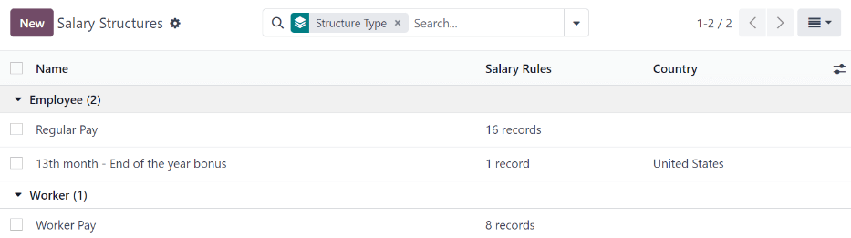
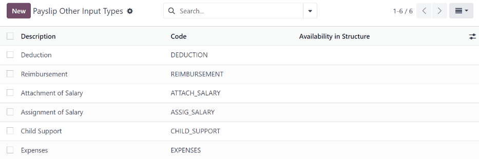
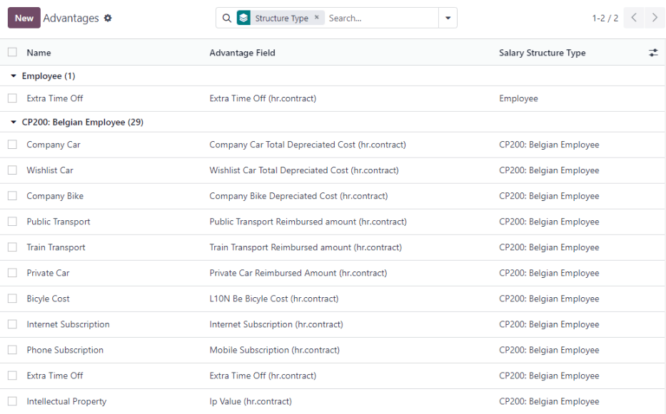
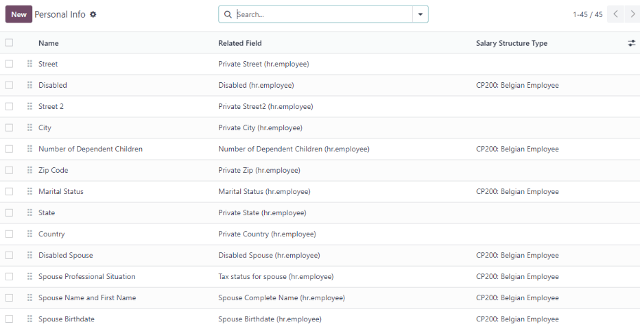
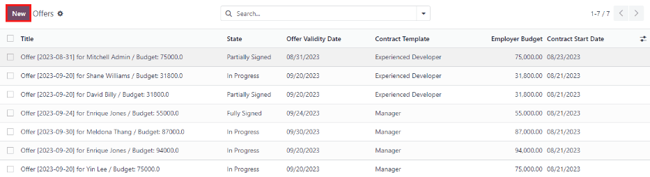

Payroll¶
Odoo Payroll is used to process work entries and create payslips for employees, including both regular pay and commission. Payroll works in conjunction with other Odoo apps, such as Employees, Timesheets, Time Off, and Attendances.
The Payroll app helps ensure there are no issues or conflicts when validating work entries, handles country-specific localizations to ensure that payslips follow local rules and taxes, and allows for salary assignments. Payroll configuration is critical to ensure accurate and timely processing of payslips.
Settings¶
To access the Settings, go to . Whether or not payslips are posted in accounting, and whether SEPA payments are created, is selected here.
The Settings screen is where localization settings are configured. Localizations are country-specific settings pre-configured in Odoo at the creation of the database, and account for all taxes, fees, and allowances for that particular country. The Localization section of the Settings includes a detailed view of all benefits provided to employees.
Any country-specific localizations are set up in the Localization section of the Settings screen. All localization items are pre-populated when the country is specified during the creation of the database. It is not recommended to alter the localization settings unless specifically required.
Note
Odoo can handle a multi-company configuration. This is generally done when there is a main company or office location, such as a headquarters, and there are other offices/branches around the country or globe, that fall under that main company or headquarters. In Odoo, each company, including the headquarters, would be setup as their own company/branch using the multi-company method.
Each individual company can have a different localization setting configured for that specific company, since company locations can vary and be located anywhere in the world, where rules and laws differ. For more information on companies refer to this documentation on setting up companies.
Work entries¶
A work entry is an individual record on an employee’s timesheet. Work entries can be configured to account for all types of work and time off, such as Attendance, Sick Time Off, Training, or Public Holiday.
See also
Work entry types¶
When creating a work entry in the Payroll application, or when an employee enters information in the Timesheets application, a Work Entry Type needs to be selected. The list of Work Entry Types is automatically created based on localization settings set in the database.
To view the current work entry types available, go to .
Each work entry type has a code to aid in the creation of payslips, and to ensure all taxes and fees are correctly entered.

New work entry type¶
To create a new Work Entry Type, click the New button, and enter the information for the following sections on the form.
General information section¶
Work Entry Type Name: The name should be short and descriptive, such as
Sick TimeorPublic Holiday.Payroll Code: This code appears with the work entry type on timesheets and payslips. Since the code is used in conjunction with the Accounting application, it is advised to check with the accounting department for a code to use.
DMFA code: This code is used to identify DMFA entries on a corresponding DMFA report. The DMFA report is a quarterly report that Belgian-based companies are required to submit for social security reporting purposes. This report states the work done by the employees during the quarter, as well as the salaries paid to those employees.
External Code: This code is used for exporting data to a third-party payroll service. Check with the third-party being used in order to determine the External Code to enter for the new work entry type.
SDWorx code: This code is only for companies that use SDWorx, a payroll service provider.
Color: Select a color for the particular work entry type.
Display in payslip section¶
Rounding: The rounding method selected determines how quantities on timesheet entries are displayed on the payslip.
No Rounding: A timesheet entry is not modified.
Half Day: A timesheet entry is rounded to the closest half day amount.
Day: A timesheet entry is rounded to the closest full day amount.
Example
If the working time is set to an 8-hour work day (40-hour work week), and an employee enters a time of 5.5 hours on a timesheet, and Rounding is set to No Rounding, the entry remains 5.5 hours. If Rounding is set to Half Day, the entry is changed to 4 hours. If it is set to Day, it is changed to 8 hours.
Unpaid section¶
Unpaid in Structures Types: If the work entry is for work that is not paid, specify which pay structure the unpaid work entry applies to from the drop-down menu. Some situations where work would be logged on a timesheet but no compensation given would be for unpaid internships, unpaid training, or volunteer work.
Valid for advantages section¶
Meal Voucher: If the work entry should count towards a meal voucher, check the box.
Representation Fees: If the work entry should count towards representation fees, check the box.
Private Car Reimbursement: If the work entry should count towards a private car reimbursement, check the box.
Time off options section¶
Time Off: Check this box if the work entry type can be selected for a time off request or entry in the Time Off application. If Time Off is checked, a Time Off Type field appears. This field has a drop-down menu to select the specific type of time off, such as
Paid Time Off,Sick Time Off, orExtra Hoursfor example. A new type of time off can be entered in the field if the listed types of time off in the drop-down menu do not display the type of time off needed.Keep Time Off Right: This is for Belgian-specific companies only, and will not appear for other localizations. Check this box if the work entry is for time off that will affect the time off benefits for the following year. Workers are given time off each year according to the government, and in some cases, time-off taken during a specific time period can affect how much time off the employee will receive or accrue the following year.
Reporting section¶
Unforeseen Absence: If the work entry should be visible on the unforeseen absences report, check this box.

Working schedules¶
To view the currently configured working schedules, go to . The working schedules that are available for an employee’s contracts and work entries are found in this list.
Working schedules are company-specific. Each company must identify each type of working schedule they use.
Example
An Odoo database containing multiple companies that use a standard 40-hour work week needs to have a separate working schedule entry for each company that uses the 40-hour standard work week.
A database with five companies that all use a standard 40-hour work week needs to have five separate 40-hour working schedules configured.

New working schedule¶
To create a new working schedule, click the New button, and enter the information on the form.
The fields are auto-populated for a regular 40-hour work week but can be modified. First, change the name of the working time by modifying the text in the Name field. Next, make any adjustments to the days and times that apply to the new working time.
In the Working Hours tab, modify the Day of Week, Day Period, and Work Entry Type selections by clicking on the drop-down menus in each column and making the desired selection. The Work From and Work To columns are modified by typing in the time.
Note
The Work From and Work To times must be in a 24-hour format. For example,
2:00 PM would be entered as 14:00.
If the working time should be in a two-week configuration, click the Switch to 2 weeks calendar button in the top left. This creates entries for an Even week and an Odd week.

Salary¶
Structure types¶
In Odoo, an employee’s payslip is based on structures and structure types, which both affect how an employee enters timesheets. Each structure type is an individual set of rules for processing a timesheet entry, which consists of different structures nested within it. Structure types define how often an employee gets paid, the working hours, and if wages are based on a salary (fixed) or how many hours the employee worked (varied).
For example, a structure type could be Employee, and that structure type could have two different
structures in it: a Regular Pay structure which includes all the separate rules for processing
regular pay, as well as a structure for an End of Year Bonus which includes the rules only for the
end of year bonus. Both the Regular Pay structure and End of Year Bonus structure are structures
within the Employee structure type.
The different structure types can be seen by going to .
There are two default structure types configured in Odoo: Employee and Worker. Typically, Employee is used for salaried employees, which is why the wage type is Monthly Fixed Wage, and Worker is typically used for employees paid by the hour, so the wage type is Hourly Wage.

New structure type¶
To make a new structure type, click the New button and a structure type form appears. Enter the information in the fields. Most fields are pre-populated, but all the fields can be modified.
Structure Type: Enter the name for the new structure type, such as ‘Employee’ or ‘Worker’.
Country: Select the country that the new structure type applies to from the drop-down menu.
Wage Type: Select what type of wage the new structure type will use, either Monthly Fixed Wage or Hourly Wage. If the wage type is going to be used for salaried employees who receive the same wage every pay period, select Monthly Fixed Wage. If the wage type is going to be used for employees who receive wages based on how many hours they worked during a pay period, select Hourly Wage.
Default Scheduled Pay: Select the typical pay schedule for the new structure type from the drop-down menu. Options are Monthly, Quarterly, Semi-annually, Annually, Weekly, Bi-weekly, Bi-monthly. This indicates how often this type of structure type is paid out.
Default Working Hours: Select the default working hours for the new structure type from the drop-down menu. All available working hours for the currently selected company appear in the drop-down menu. The default working hours that are pre-configured in Odoo is the Standard 40 hours/week option. If the needed working hours do not appear in the list, a new set of default working hours can be created.
Regular Pay Structure: Type in the name for the regular pay structure.
Default Work Entry Type: Select the default type of work entry the new structure type will fall under from the drop-down menu. Options include Attendance, Overtime Hours, Generic Time Off, Compensatory Time Off, Home Working, Unpaid, Sick Time Off, Paid Time Off, and Out Of Contract.

New default working hours¶
To make new default working hours, type the name for the new working hours in the Default Working Hours field on the new structure type form. Click Create and edit. A default working hours form will pop up. The default working hours form has two sections, a general information section and a tab listing out all the individual working hours by day and time. When the form is filled out, click Save & Close.
Name: Type in the name for the new default working hours. This should be descriptive and clear to understand, such as
Standard 20 Hours/Week.Company: Select the company that can use these new default working hours from the drop-down menu. Keep in mind, working hours are company-specific and cannot be shard between companies. Each company needs to have their own working hours set.
Average Hour Per Day: The average hours per day field will be auto-populated based on the working hours configured in the Working Hours tab. This entry affects resource planning, since the average daily hours affect what resources can be used, and in what quantity, per work day.
Timezone: Select the timezone that the new default working hours will be used for from the drop-down menu.
Company Full Time: Enter the number of hours per week an employee would need to work in order to be considered a full-time employee. Typically, this is approximately 40 hours, and this number affects what types of benefits an employee can receive based on their employment status (full-time vs part-time).
Work Time rate: This percentage is auto-generated based on the entry for the Company Full Time and the working hours configured in the Working Hours tab. This number should be between
0.00%and100%, so if the percentage is above100%, it is an indication that the working times and/or Company Full Time hours need adjustment.Working Hours Tab: This tab is where each day’s specific working hours are listed. When a new default working hour form is created, the working hours tab is pre-populated with a default 40-hour week, with each day divided into three timed sections. Every day has morning (8:00-12:00), lunch (12:00-13:00), and evening (13:00-17:00) hours configured using a 24 hour time format. To adjust any of these hours, click on the specific field to adjust, and make the adjustment using the drop-down menus, or in the specific case of the times, type in the desired time.
Note
If the working hours are not consistent each week, and the hours are on a bi-weekly schedule instead, click the Switch to 2 week calendar button at the top of the new default working hours form. This will change the working hours tab to display two weeks of working times that can be adjusted.
Structures¶
Salary structures are the different ways an employee gets paid within a specific structure, and are specifically defined by various rules.
The amount of structures a company needs for each structure type depends on how many different ways
employees are paid, and how their pay is calculated. For example, a common structure that could be
useful to add may be a Bonus.
To view all the various structures for each structure type, go to .
Each structure type lists the various structures associated with it. Each structure contains a set of rules that define it.
Click on a structure to view its Salary Rules. These rules are what calculate the payslip for the employee.
Rules¶
Each structure has a set of salary rules to follow for accounting purposes. These rules are configured by the localization, and affect actions in the Accounting application, so modifications to the default rules, or the creation of new rules, should only be done when necessary.
To view all the rules, go to . Click on a structure (such as Regular Pay) to view all the rules.
To make a new rule, click New. A new rule form appears. Enter the information in the fields.
The required fields for a rule are:
Name: Enter a name for the rule.
Category: Select a category the rule applies to from the drop-down menu, or enter a new one.
Code: Enter a code to be used for this new rule. It is recommended to coordinate with the accounting department for a code to use as this will affect accounting reports and payroll processing.
Salary Structure: Select a salary structure the rule applies to from the drop-down menu, or enter a new one.
Condition Based on: In the General tab, select from the drop-down menu whether the rule is Always True (always applies), a Range (applies to a specific range, which is entered beneath the selection), or a Python Expression (the code is entered beneath the selection).
Amount Type: In the General tab, select from the drop-down menu whether the amount is a Fixed Amount, a Percentage (%), or a Python Code. Depending on what is selected, the fixed amount, percentage, or Python code needs to be entered next.

Rule parameters¶
Note
Currently, the Rule Parameters feature found inside the menu is still in development and only serves a specific use case for Belgian markets. The documentation will be updated when this section has matured to more markets.
Other input types¶
When creating payslips, it is sometimes necessary to add other entries for specific circumstances, like expenses, reimbursements, or deductions. These other inputs can be configured by going to .
To create a new input type, click the New button. Enter the Description, the Code, and which structure it applies to in the Availability in Structure field.
Important
The Code is used in the salary rules to compute payslips. If the Availability in Structure field is left blank, it indicates that the new input type is available for all payslips and is not exclusive to a specific structure.

Salary package configurator¶
The various options under the Salary Package Configurator section of the menu all affect an employee’s potential salary. These sections (Advantages, Personal Info, Resume, and Offers) specify what benefits can be offered to an employee in their salary package.
Depending on what information an employee enters (such as deductions, dependents, etc.), their salary is adjusted accordingly. When an applicant applies for a job on the company website, the sections under Salary Package Configurator directly affect what the applicant sees, and what is populated as the applicant enters information.
Advantages¶
When offering potential employees a position, there can be certain advantages or benefits set in Odoo in addition to the salary to make an offer more appealing (such as extra time off, the use of a company car, reimbursement for a phone or internet, etc.).
To see the advantages, go to . Advantages are grouped by Structure type, and the advantage listed for a particular structure type is only available for that specific structure.
Example
A company has two structure types, one labeled Employee, and anther labeled Intern. The Employee structure type contains an advantage of using a company car, while the Intern structure type does not. Instead, the Intern structure type has a meal voucher advantage available, while the Employee structure type does not.
A person hired under the Employee structure type can use a company car, but cannot have meal vouchers. The opposite is true for someone hired under the Intern structure type. They would have meal vouchers available to them, not the use of a company car.
To make a new advantage, click the New button, and enter the information in the fields. The required fields for an advantage are:
Name: Enter the name for the advantage.
Advantage Field: Select from the drop-down menu what field in the payslip this advantage appears under.
Advantage Type: Select from the drop-down menu what type of advantage the benefit is. Select from Monthly Benefit in Kind, Monthly Advantages in Net, Monthly Advantages in Cash, or Yearly Advantages in Cash.
Salary Structure Type: Select from the drop-down menu which salary structure type this advantage applies to.
Display Type: Select from the drop-down menu how this advantage is displayed.
Personal info¶
Every employee in Odoo has an employee card which is created when a candidate becomes an employee. This card includes all of their personal information, resume, work information, and documents.
The personal information is gathered from the salary package configurator section that a candidate fills out after being offered a position. This personal information is then transferred to the employee card when they are hired.
To view an employee’s card, go to the main app dashboard, and click on the employee’s card.
Note
An employee card can be thought of as an employee personnel file.
The Personal Information section lists all of the fields that are available to enter on the employee’s card. To access this section, go to .
To edit a personal info entry, select the entry from the list, and modify the personal info. To create a new personal info entry, click the New button.
The required fields, aside from entering the Information name, are Related Model, Related Field, and Category. Select a Related Model from the drop-down menu. Employee populates the field by default, but the Bank Account option is also available if the information is related to a bank account instead. Select a Related Field from the drop-down menu that best describes what kind of personal information this entry is, and where it is going to be stored in the backed. Then, select a Category from the drop-down menu that the personal information should be under, such as Address or Personal Documents.
The two most important fields on the personal info form are Is Required and Display Type. Checking the Is Required box makes the field mandatory on the employee’s card. The Display Type drop-down menu allows for the information to be entered in a variety of ways, from a Text box, to a customizable Radio button, a Checkbox, a Document, and more.

Resume¶
Note
Currently, the Resume feature found inside the menu is still in development and only serves a specific use case for Belgian markets. The documentation will be updated when this section has matured to more markets.
Offers¶
When a candidate is offered a position, there are several items that need to be tracked in order for a business to stay organized, such as where in the offer process the candidate is, how long the offer is valid for, as well as all the offer details. These details are all stored in each offers record.
To view all offers, go to . All offers that have been sent to either potential candidates or current employees appears in this list. The status, offer start date and expiration date, amount of the contract, and more, can all be found in this list. Offers sent via the Recruitment application appear here, but there is an option to create a new offer from the Payroll application as well.
To create a new offer, click the New button. The two required fields are the Contract Template, and the Company. Select the Contract Template and Company from the drop-down menus. Fill in any other details for the offer, such as the Job Title, Department, the Contract Start Date and the Offer Validity Date.